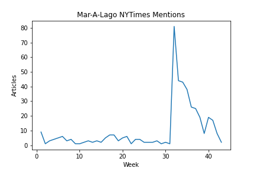
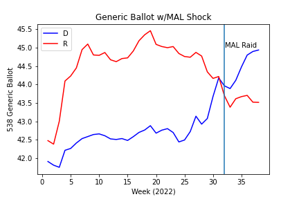

Intro
One major unexpected event of this election cycle was the FBI’s raid on Mar-A-Lago, former President Donald Trump’s persoanl residence, in pursuit of missing highly classified documents. This news story captured the attention of both those on the left and the right, as shown in the number of the number of articles that mention “Mar-A-Lago” in the NYTimes spiking during the week of the raid.

However, it should be noted that we can see that the current level of discussion of Mar-A-Lago has now returned to pre-raid levels, seeming to demostrate that the “shock” has already entirely dissapated. Nevertheless, we can analyze the immediate impact of the raid on the generic polling average:

Test